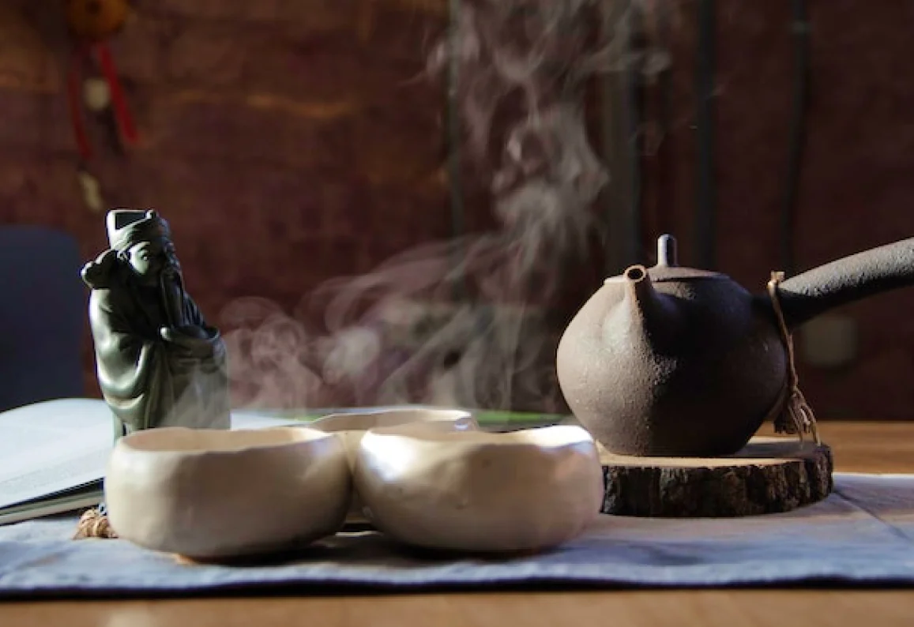
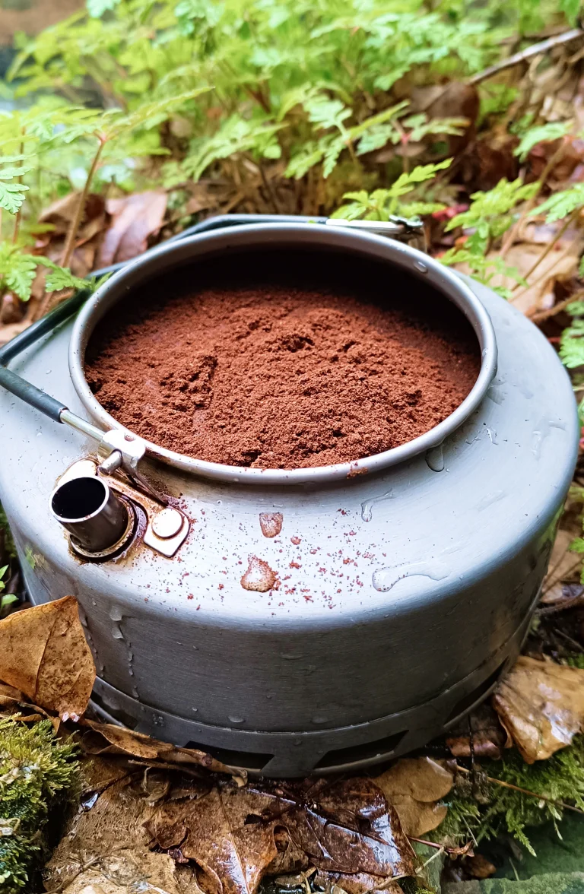
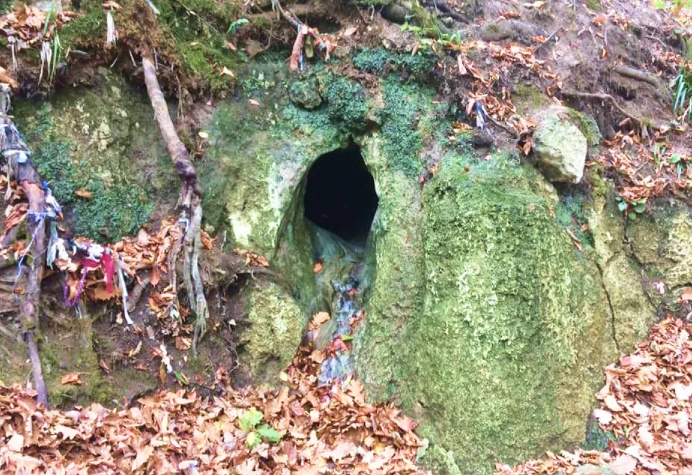
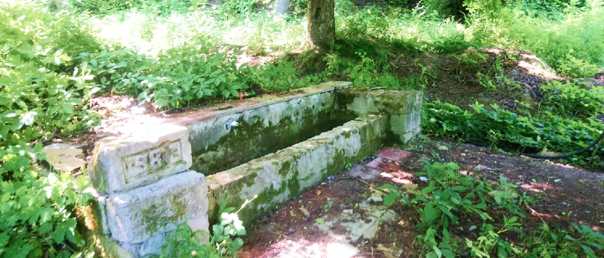
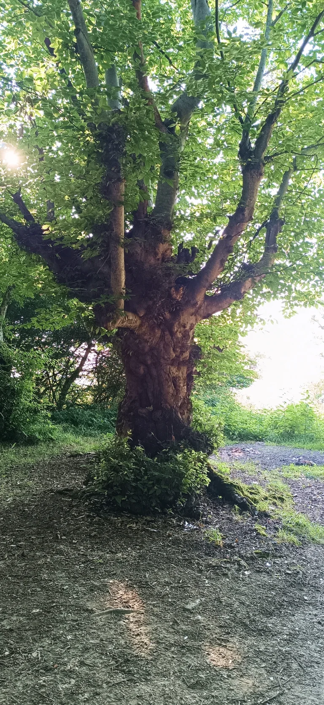
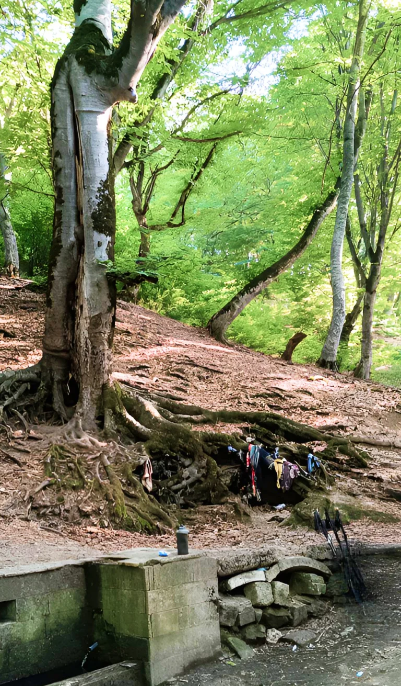

«Чай- это тишина, которая говорит».
Родники Южного Дагестана.

В «Каноне» Ча цзин есть слова: Вода из медленно текущих потоков, вымощенных камнями, или молочно-чистых родников- лучшая из горных вод. Никогда не пейте чай, сделанный из воды, которая падает водопадами, хлещет из родника, мчится стремительным потоком или крутится водоворотом и всплескивается, как будто природа ополаскивает свой рот».
«Ча цзин» - первый в истории трактат о чае и чаепитии.
Другой трактат «Ча Шу» говорит: «Качество лучшего чая и его тонкий аромат могут быть понятны только через свойства воды, нет воды- нечего и о чае говорить».

Во многих древних трактатах Китая есть упоминание о семи источниках, в которых, как считалось, была лучшая вода для чая. Особую ценность представляла вода из горных источников, кроме всех идеально подходящих для чая показателей, она имела целебную силу.
Путешествие по Южному Дагестану можно сделать еще интереснее, если взять с собой в дорогу любимые сорта чая или кофе и чайник (или турку).
Последуя советам мудрых мастеров чая и народных знаний о силе родников, опишу места где я рекомендовал бы взять воду для осознанного заваривания ваших любимых напитков.
Родник Эмджэк-пир.
42 ̊01'46.57"N,48 ̊15'28.31"Е
Вода родника капает с небольших сталактитов пещеры на дно каменной чаши. Чтобы набрать воду надо на половину длины тела забраться внутрь пещеры и металлическим ковшом на деревянной ручке набрать воду. Вход в пещеру и корни деревьев, оплетшие ее стены, напоминают о живородящей силе земли. До сегодняшнего дня женщины, желающие зачать ребенка, приходят в это древнее природное святилище за водой из «святых сосцов». Вода не двигается в этом роднике, она неспеша капает с небольших образований, покрывающих потолок пещеры.
Ближайшее село Джалган.
Однозначно рекомендую для чая и кофе. Все, что у вас есть редкого чайного, что дорого вашему сердцу, смело заваривайте этой водой.

Чжан Дафу из династии Мин говорил: «Две десятых чая встречают восемь десятых воды. Чай и вода дополняют друг друга, поэтому умение пробовать и разбираться в воде еще важнее, чем умение пробовать и разбираться в чае».
Родник селения Гимейди неподалеку от древнего платана.
42 ̊01'20.74"N,48 ̊06'17.97"Е
Быстрый родник, работающий даже в самую жаркую погоду. Расположен на западном склоне Джалганского хребта среди бескрайних лесов. Рядом с родником растет один из гигантских платанов, возрастом более 700 лет, корни которого питаются от источника воды.
Насладиться чаем можно в беседке, расположенной рядом. Или отправится на остатки персидского форта Шелкани Кала (персидские форты заслуживают отдельного рассказа однако) в 5 км от родника.
Из чаев я бы рекомендовал попить здесь Тайванские улуны.

Гёз-булаг.
41 ̊59'58.24"N,48 ̊03'41.16"Е
«Пир» известный на весь Табасаран. Водой из этого родника в праздник Навруз обрызгивают животных и жилища. С древних времен люди верят, что вода из Гёз-булага может снять дурной сглаз и избавить от болезни.
По легенде в этом месте Аллах исцелил от слепоты Дервиша, который сам стал родником, проводником благости. Вода из этого родника невероятно вкусная. Над ним растет дерево с раздвоенным стволом. Если трижды пролезть сквозь него и завязать ленту или платок на его корнях, то можно избавиться от болезни и загадать желание.

Окружающий лес лишь добавляет величественности месту. Невероятные формы стволов напоминают не то лесных духов или энтов, не то колонны в храме природы.
Место почиталось еще в доисламский период.
Рекомендую набрать здесь воду и заваривать фуцзяньские темные улуны на стене крепости, располагающейся в лесу на расстоянии около 2.5 км.
Там Вас будет ждать чаепитие с видом на долину Дарваг, утопающую в зелени и в виноградниках.

Центральный родник селения Хурик.
41 ̊59'26.56"N,47 ̊53'58.36"Е
Расположен под горой Хюр, популярен у местных жителей несмотря на проведенный в домах водопровод. Все важные столы (свадьба, рождение ребенка и т.д.) готовят на воде из этого родника. Считается, что вода в нем особо мягкая и не содержит примесей.
Родник обладает хорошим дебетом и не пересыхает даже в середине лета.
Я рекомендую прислушаться к традиции местных жителей и набрать бутылку воды в дорогу в этом месте.
Для этой воды подойдет любой чай, но я бы рекомендовал Шу пуэр или Ассам.
Заварить чай можно на смотровой перевала Деюкбере или у кемпинга над селом Варсит.